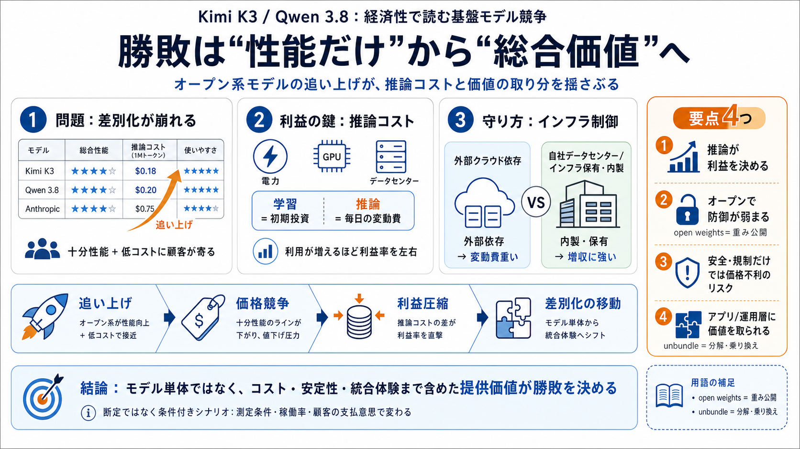

Kimi K3, Qwen 3.8, and Anthropic's (potential) Unravelling
# Kimi K3, Qwen 3.8, and Anthropic's (potential) Unravelling. This past week, two state-of-the-art (SOTA) foundation mod…

初期イベントで高額だが、完成後は収益を毎日押し上げる主役ではない。
主に電力とデータセンター運用が効き、利益を直接左右する。
電力・計算資源を外注（リース等）→ 変動費が重くなる。
データセンター/発電を自社寄せ→ 変動が相対的に小さくなる。
顧客利用が増えるほど、利益率が改善しやすい。
モデル以外（ツール/エージェント/運用/アプリ）も取り込めると、顧客の“乗り換え”が起きる。
性能だけでなく、コスト・安定性・統合体験へ優位が移る可能性が高い。
オープンウェイトにより、他社が推論基盤や微調整で“近い体験”を作れる。
競争激化で価格が下がると、推論単価の差が収益構造に直撃する。
性能・安全・規制対応をセットで差別化（安全方針により提供形態も影響）
自社モデルは他社より推論単価が高い可能性（例：完了タスクあたり約3倍といった推定）
Kimi K3 / Qwen 3.8 が近い水準へ。
ハーネス（AIアプリ周辺）が模倣されやすくなる。
推論の変動費と価格の下落が同時に効く。
電力・データセンター最適化が長期の価格競争力になる。
十分性能＋低コストへ流れ、差別化が性能更新に依存しにくくなる。
安全・規制の賭けに加え、推論単価の不利が致命傷になり得る。
運用・アプリ層で価値を取られるとモデル企業は分解（unbundle）リスク。
推論単価の測定条件（ハード/最適化/タスク定義）や稼働率。
ユーザーの支払意思（遅延許容・必要精度・エンタープライズ/個人）。
モデル提供者の生存戦略は、インフラ制御・運用品質・統合体験へ拡張される。
“オープン＝有利”や“単体＝不利”の二分法ではなく、条件付きシナリオとして評価する。
# Kimi K3, Qwen 3.8, and Anthropic's (potential) Unravelling. This past week, two state-of-the-art (SOTA) foundation mod…
China compressed US factory margins over 30 years that hurt but factories have a cost floor because every unit costs mon…
Here, members can share benchmarks, real-world use cases, optimization strategies, and performance comparisons across di…
# After Kimi K3, Alibaba unveils Qwen 3.8, claims it's second only to Claude Fable 5. ## With the launch of Kimi K3 and …
Alibaba's Qwen team just dropped Qwen 3.8, a massive 2.4-trillion-parameter model that claims to rival the best in the w…